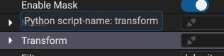

Edit Params
Accessing params
Params are accessible on their parenting using Autograph.Effect.param(uniqueName)() or Autograph.Param.param(uniqueName)() functions.
Some commonly used params are directly declared as attributes on their parent object, with the attribute’s name being the same as the Autograph.Param.getUniqueName()
For example, to access the mask of a Layer2D:
print(layer.mask.getDisplayName())
Some parameters however are not available as class attributes because they are less frequently used. You can find out the unique-name of a Param in 2 ways:
In the UI, hover the mouse on the param to reveal its tooltip indicating the Python script-name
{kind=link}

From the Python Panel console in the UI, you can loop over all params in an Effect ,e.g:
layer=Autograph.Layer2D() for p in layer.getParams(): print(p.getUniqueName())
Setting a Param value
Most parameters in the UI inherit DoubleParamBase, DoubleParam2DBase, DoubleParam3DBase, DoubleParam4DBase, BoolParamBase or StringParamBase.
Each of these class internally store a value that can be set/get with Autograph.DoubleParamBase.setValue() Autograph.DoubleParamBase.getValue(). The same method can also be used to set keyframes.
For a more in-depth manipulation of the keyframes, the animation Curve can be accessed with Autograph.DoubleParamBase.getCurve().
Note
When calling Autograph.DoubleParamBase.getValue(), the returned value will properly apply all generator and modifiers. If you wish to get the internal animation curve value without applying generator/modifiers, directly use Autograph.Curve.getValueAtTime()
Setting a Param generator
A Param<Autograph.Param generator can be set or unset with Autograph.Param.setGeneratorEffect() and takes in input an Effect object.
There are 2 use-cases to set a generator:
Set the generator to point to a
ProjectItem
project=Autograph.app.getActiveProject()
myFootage=project.importFootage('/media/myfiles/video.mov')
layer.source.setGeneratorEffect(myFootage)
# which is similar to
layer.source.setGeneratorEffect(myFootage.createEffectSharedInstance())
Create a new procedural generator
circle=Autograph.Effect('Autograph.CircleGenerator')
layer.source.setGeneratorEffect(circle)
Adding modifiers
Modifiers are simply added on the ModifierList returned by Param.getModifiersList().
blur=Autograph.Effect('Autograph.BlurModifier')
layer.source.getModifiersList().addModifier(blur)
Note
The list of available generators/modifiers classID can be queried by Application.getGeneratorsClassID() and Application.getModifiersClassID().